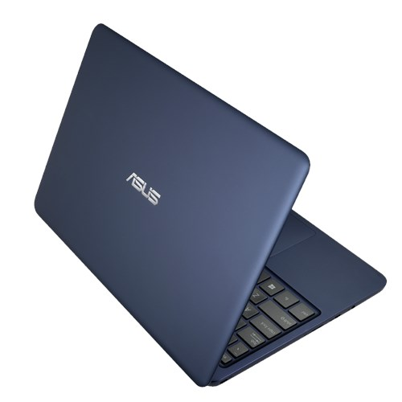
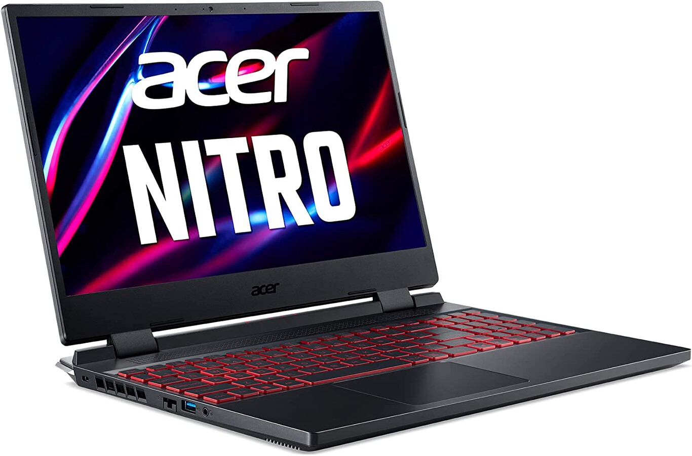
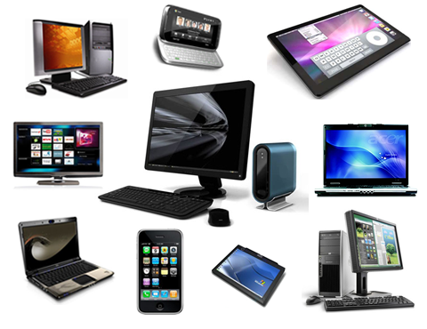
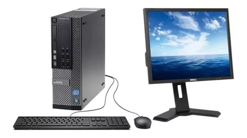

La tecnología es la suma de técnicas, habilidades, métodos y procesos utilizados en la producción de bienes o servicios o en el logro de objetivos, como la investigación científica.
Vista previa de algunos productos
ASUS EeeBook X205TA

El EeeBook X205 es un portátil de 11,6 pulgadas asequible, elegante y compacto que pesa menos de un 1 kg, y está diseñado para estudiantes y profesionales jóvenes que suelen ir de un sitio para otro. El EeeBook X205 ofrece al usuario una experiencia similar a la de un smartphone, gracias al uso de la tecnología Connected Standby
Pc Gamer

Una de las características de un computador gamer es que suelen ser más pesados que los comunes. Esto ocurre porque su estructura es de materiales sólidos y de calidad. Por otro lado, cuentan con un diseño muy estético que incluye retroiluminación RGB en algunos elementos como el teclado
Tipos de computadores

1- Computadora analógica
2- Computadora híbrida
3- Supercomputadora
4 -Computadora central
5- Minicomputadora
6- Microcomputadora.
Computador de mesa

Se denomina computadora de escritorio, computador de escritorio, ordenador de sobremesa u ordenador fijo a un tipo de computadora personal, diseñada y fabricada para ser instalada en una ubicación estática, como un escritorio o mesa, a diferencia de otras computadoras similares
Lo último en tecnología movil

El iPhone 15 te permite elegir entre varias distancias focales. Es como llevar siete lentes profesionales en el bolsillo adondequiera que te lleve la inspiración. La cámara gran angular de 48 MP es más avanzada que nunca, y toma fotos en superalta resolución con un increíble nivel de detalle y color.
El Samsung Galaxy S24 cuenta con una descripción la cual es:
la batería 4000 mAh
Puertos. USB tipo C
Conectividad. Wi-Fi 802.11a/b/g/n/ac/ax, WiFI 6E, UMTS,H SDPA, HSPA+, LTE,5G, Bluetooth 5.3, NFC
Procesador
Sistema operativo
Ram
Memoria expandible máxima
Generaciones de tecnología de red inalámbrica.
Redmi Note 13 Pro+ 5G cuenta las siguientes Características destacadas:
Tamaño de la pantalla: 6.67 pulgadas
Procesador: Mediatek Dimensity 7200 Ultra (4 nm)
Cámara posterior: 200MP (ANCHO) + 8MP Ultra + 2MP (MACRO)
Cámara frontal: 16MP
Memoria interna: 512GB + 12GB
Batería: 5000 mAH,
Si Incluye Cargador 120w